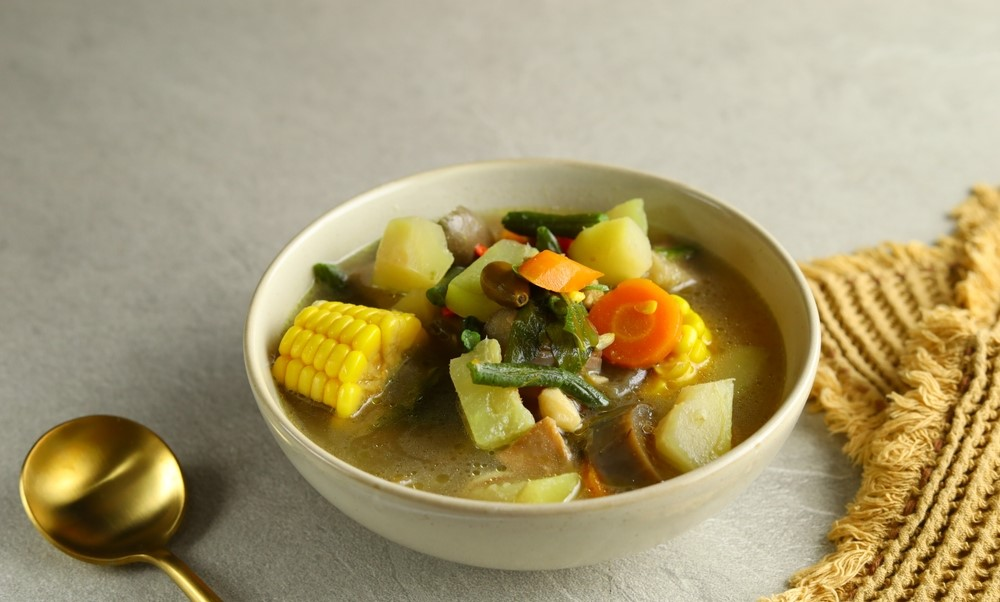

Sayur Lodeh
Resep Sayur Lodeh Lezat Untuk Disantap Ramai-ramai
Bahan Masakan
- 2 sdm minyak goreng, untuk menumis
- 8 gram lengkuas memarkan
- 3 daun salam
- 500 ml santan santan encer
- 500 ml susu rendah lemak
- 150 g kacang panjang, potong 3 cm
- 10 tahu digoreng (siap santap)
- 50 g petai dibelah secara melintang
- 30 g cabai merah segar (keriting), iris tipis
- 25 g cabai hijau segar (keriting), iris tipis
- 1/2 sdm bumbu campur Royco rasa ayam
Bumbu halus
- 8 bawang merah
- 3 bawang putih
- 1/2 sendok makan ketumbar
- 1 sendok teh garam
Cara membuat sayur lodeh
- Panaskan minyak. Tumis bumbu halus, lengkuas, dan daun salam hingga harum. Kecilkan api.
- Tambahkan santan, masak hingga mendidih sambil terus diaduk.
- Masukkan sisa bahan dan Royco Kaldu Ayam, terus aduk hingga kacang panjang matang. Angkat.
- Sajikan hangat.